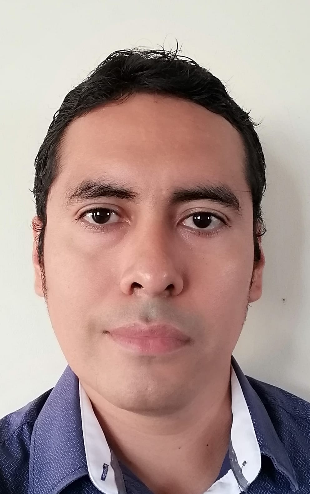

EDUCACIÓN
Tecnológico Nacional de
México Campus Instituto
Tecnológico de Veracruz
Ingeniería Eléctronica 2006-2012
Especialista en sistemas digitales
Instituto en Micro Y Nanotecnología Facultad de Ingeniería de la UV
Maestría en Ciencias en Micro y Nano Sistemas 2014-2016
Especialista en dispositivos optoelectrónicos
Benemerita Universidad Autonoma de Puebla (BUAP)
Doctorado en fisiología 2017-2021
Especialista en Analisis de Datos
"La mejor manera de predecir el futuro es contruyéndolo"
PEDRO
MABIL ESPINOSA
Ing. Eléctronico
Titulo | Cedula profesional
2291766233 ● h3mabil@gmail.com
EXPERIENCIA
MAESTRÍA
Realización de simulaciones en Matlab para la obtención de parámetros eléctricos en dispositivos semiconductores
DOCTORADO
Desarrollo de proyectos técnico-electrónicos para ayudar a la realización experimentos y la subsecuente generación de artículos científicos.
Realización de una interfaz grafica (GUI), en matlab, para el analisis y el procesamiento de los datos obtenidos en los experimentos que lleve acabo (2019)
Obtención de una patente para la estimulación mecánica en roedores (2020)
Diseño y construcción de un sistema para la adquisición y visualización en tiempo real de señales electroencefalografías desarrollado en Python(2021)
CURSOS/CONOCIMIENTOS
Impartición de cursos de Probabilidad y Estadística a estudiantes universitarios de la universidad de puebla
Lenguaje de programación Matlab
Solidworks
Lenguaje de programación Python
Lenguaje de estructuración HTML:5
Lenguaje de estilo en cascada CSS
Lenguaje de programación Javascript
Lenguaje de programación PHP
Lenguaje de programación SQL
Manejo y Gestion de bases de Datos SQL y NoSQL(MongoDB)